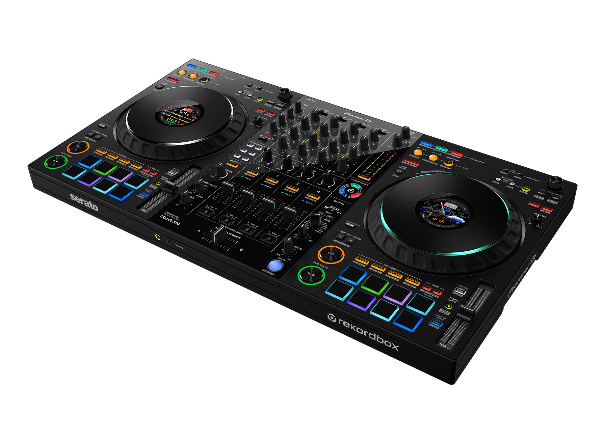

Hochzeit & Klassiker
PartyMitsing-Hits, Klassiker und Dancefloor-Favoriten – perfekt für volle Tanzflächen.
Kommt vorbei und feiert mit – Tickets gibt's direkt unten.

Als DJ bin ich in der Region regelmäßig unterwegs - ob im Club, auf Firmenfeiern, Geburtstagen oder Hochzeiten. Durch diese Erfahrung bin ich in vielen Genres zu Hause und finde für jeden Anlass die passende Musik.
Interesse? Dann schreib mir gerne eine Anfrage!
Anfrage startenIch arbeite gerade an neuen Demo Sets – bald kannst du sie dir hier direkt anhören.
Hier findest du ein paar kurze Hörproben. Das sind nur Demos - ich kann natürlich viele weitere Genres spielen und passe mich immer an Stimmung, Anlass & eure Wünsche an.
Mitsing-Hits, Klassiker und Dancefloor-Favoriten – perfekt für volle Tanzflächen.
Von Pop über Rock bis Disco – zeitlose Klassiker für jede Generation.
Aktuelle Charts, Club & Dance – moderne Party-Vibes für jede Feier.

Für meine Events arbeite ich mit hochwertiger und zuverlässiger DJ-Technik. Mein Setup basiert auf dem Pioneer DDJ-FLX10 - einem modernen Profi-Controller mit XLR-Ausgängen für bestmögliche Soundqualität und stabile Performance.
So ist sichergestellt, dass eure Feier nicht nur musikalisch, sondern auch technisch auf höchstem Niveau umgesetzt wird.
Falls die Location keine passende Ton- oder Lichtanlage bietet, bringe ich selbstverständlich ein abgestimmtes Sound- und Lichtkonzept mit - individuell für eure Veranstaltung.
Schreib mir gerne eine Anfrage - ich freue mich mit euch zu feiern und melde mich schnellstmöglich zurück.
Am besten direkt mit Datum, Location und Anlass. So kann ich sofort prüfen, ob ich verfügbar bin.
In der Regel antworte ich innerhalb von 24 Stunden.